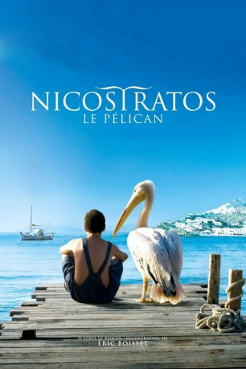

#63 Ein Griechischer Sommer
 
 IMDB-Wertung: 6.9 / 10
IMDB-Wertung: 6.9 / 10  Metascore: 0
Metascore: 0 
Die rührende Freundschaftsgeschichte des vierzehnjährigen Yannis und einem Pelikan mit dem Namen Nicostratos wird in dem Film mit tollen Bildern und Musik untermalt erzählt. Der Film ist eine französische Produktion, spielt aber auf kleinen Inseln in Griechenland.
Jahr: 2011
Dauer: 92 Minuten
FSK: 6
Land: Frankreich Studio: Koch MediaTonspuren:
Untertitel:
Auflösung: 720p (1280×544) Größe: 3594 MB
Genre: Komödie, Drama
Regisseur: Olivier Horlait
Drehbuch: Eric Boisset, Olivier Horlait
Soundtrack: Panagiotis Kalatzopoulos
Darsteller:
- Emir Kusturica als Démosthène
- Viki Maragaki als La vendengeuse
- Thibault Le Guellec als Yannis
 François-Xavier Demaison als Aristote
François-Xavier Demaison als Aristote- Jade-Rose Parker als Angeliki
- Gennadios Patsis als Popa Kosmas
- Valériane de Villeneuve als Mme Karoussos
- Yves Nadot als Le capitaine du cargo
- Ntinos Pontikopoulos als Moine Karoussos
- Dimitris Sarikizouglou als Moine prudent
- Socratis Patsikas als Moine gourmand
- Stelios Iakovidis als Moine sérieux
- Vasilis Batsakoutsas als Le guide touristique
- Christina Dendrinou als La maraîchère
- Monica McShane als La touriste américaine
- Yiannis Damirai als Spyros
- Spyros Kyriazopoulos als Fokas
- Maria Pouliezou als Sylvia
- Yiannis Psarakis als Daniel
Datei: X:\2011(G-M)\Griechischer Sommer, Ein (2011, FSK, 1280x544).mkv seit 02.02.2015
Festplatte: HD 2011(G-Z)
 Es gibt insgesamt 100 Filme in der Gruppe '2011(G-M)'
Es gibt insgesamt 100 Filme in der Gruppe '2011(G-M)'